In this homework, I built a functional 2D rasterizer that converts abstract SVG geometric data into discrete pixels. This involved developing a pipeline capable of rendering basic shapes, managing complex hierarchical transformations, and implementing advanced antialiasing and texture mapping techniques.
Insight: Implementing supersampling highlighted the massive trade-offs in speed and memory required for high-fidelity antialiasing compared to more efficient texture filtering like mipmapping.
To rasterize triangles, the algorithm first determines the bounding box by calculating the minimum and maximum x and y coordinates from the three provided vertices. This box represents the smallest possible rectangle that ensures the entire triangle is contained within its boundaries. By restricting the sampling process strictly to this area, the algorithm avoids checking pixels that are guaranteed to reside outside the triangle, effectively acting as a barrier for computational efficiency.
For every sample point \((sx, sy)\) within the bounding box, a three-line test is performed to determine if the point is "inside" the triangle. This is achieved using a line test function defined as \(L_i(x, y) = A_i x + B_i y + C_i\). To account for both clockwise and counter-clockwise vertex orderings, the algorithm checks if all three line tests return results that are consistently non-negative \((\geq 0)\) or consistently non-positive \((\leq 0)\). If the point passes all three tests, the pixel is populated using a fill_pixel function.
The efficiency of this approach is grounded in its one-pass nature; it is no worse than any algorithm that checks every sample within the bounding box. By iterating through the points in the bounding box once with a single check per line, the algorithm eliminates redundant checks across the frame buffer. This ensures that the performance remains focused on the geometric footprint of the triangle rather than the global screen resolution.
Supersampling is a technique used to reduce aliasing artifacts by sampling the scene at a higher frequency than the target display resolution. In this implementation the sample_buffer is a 1D std::vector<Color> sized to Width × Height × SampleRate, so it holds N sub-pixels per screen pixel where N is the sample_rate. Buffer management functions such as set_sample_rate and set_framebuffer_target resize this vector whenever the window dimensions or sampling rate change. During rasterization the algorithm visits a sqrt(rate) × sqrt(rate) grid inside each pixel and samples the sub-pixel centers at px = x + (i + 0.5)/sqrt_rate, py = y + (j + 0.5)/sqrt_rate. The resolve_to_framebuffer step downsamples by averaging all sub-pixel colors for a given screen coordinate (x, y) and writing that average into the final rgb_framebuffer_target.
To integrate supersampling the rasterization pipeline was adjusted: rasterize_triangle now performs nested loops to test point-in-triangle at the sub-pixel level and maps each inside sample into the high-resolution buffer using the appropriate index (e.g. sy * (width * sqrt_rate) + sx); fill_pixel was updated to populate all N sub-pixels associated with a screen coordinate so primitives remain correct as sampling increases; and a final resolution pass was added to convert high-frequency sample data into the low-frequency framebuffer suitable for display.
Supersampling functions as a low-pass filter to address aliasing, which occurs when high-frequency signals (sharp triangle edges) are sampled at a rate too low for the geometry. By sampling multiple sub-pixel locations and averaging them, we effectively calculate the percentage coverage of a pixel. For example, if a triangle tip only covers 1 out of 4 sub-pixels, the resulting pixel is displayed at 25% opacity, creating a smooth visual gradient rather than a harsh staircase effect.
|
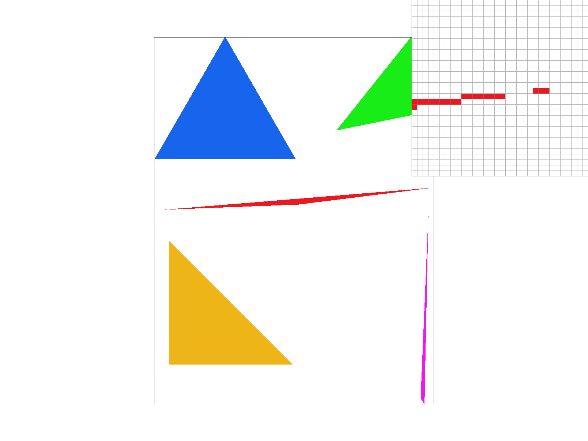 |
|
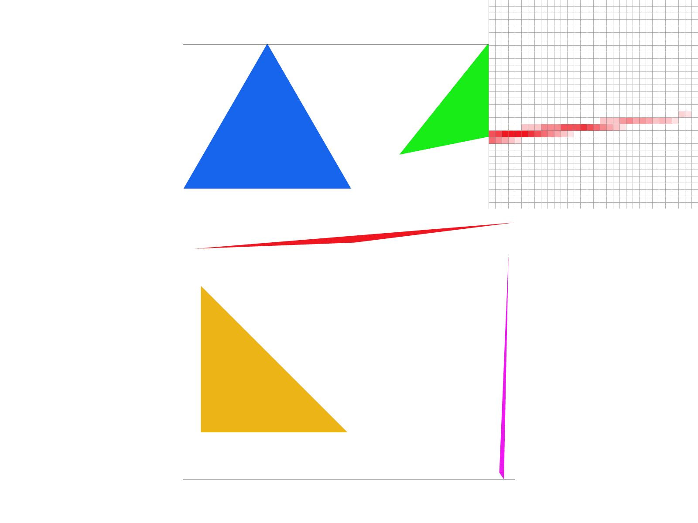 |
Observation Analysis:
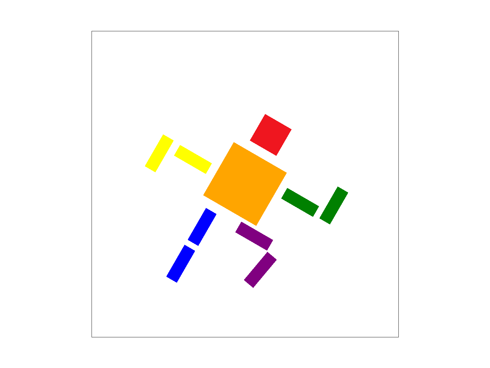
Barycentric coordinates are a coordinate system that describes the position of a point within a geometric shape, like a triangle, as a weighted average of its vertices. Instead of using absolute $(x, y)$ screen space coordinates, any point \(P\) inside a triangle with vertices \(A\), \(B\), and \(C\) can be represented as:\[P = \alpha A + \beta B + \gamma C\] Where the scalar weights satisfy the condition \(\alpha + \beta + \gamma = 1\). These weights essentially represent how "close" a point is to each vertex. For example, if a point is exactly at vertex \(A\), then \(\alpha=1\) while \(\beta\) and \(\gamma\) are both \(0\).
To visualize this concept, we can assign a distinct color to each vertex (Red, Green, and Blue) and use the barycentric weights to interpolate the color at every point inside the triangle.
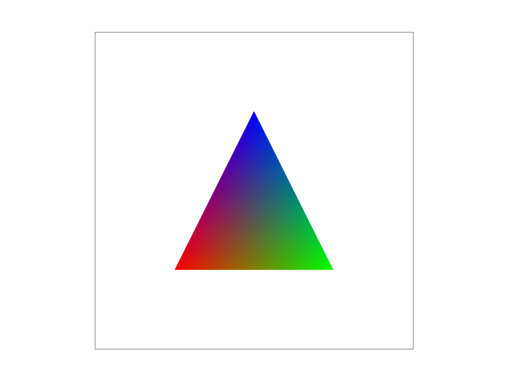
In the image above, the pure red corner corresponds to a weight of 1 for the red vertex \((\alpha=1)\). The pure blue and pure green corners represent points where the other respective weights are 1. The blended colors in the center show the smooth transition where all three weights are non-zero, creating a gradient based on the relative influence of each vertex's color.
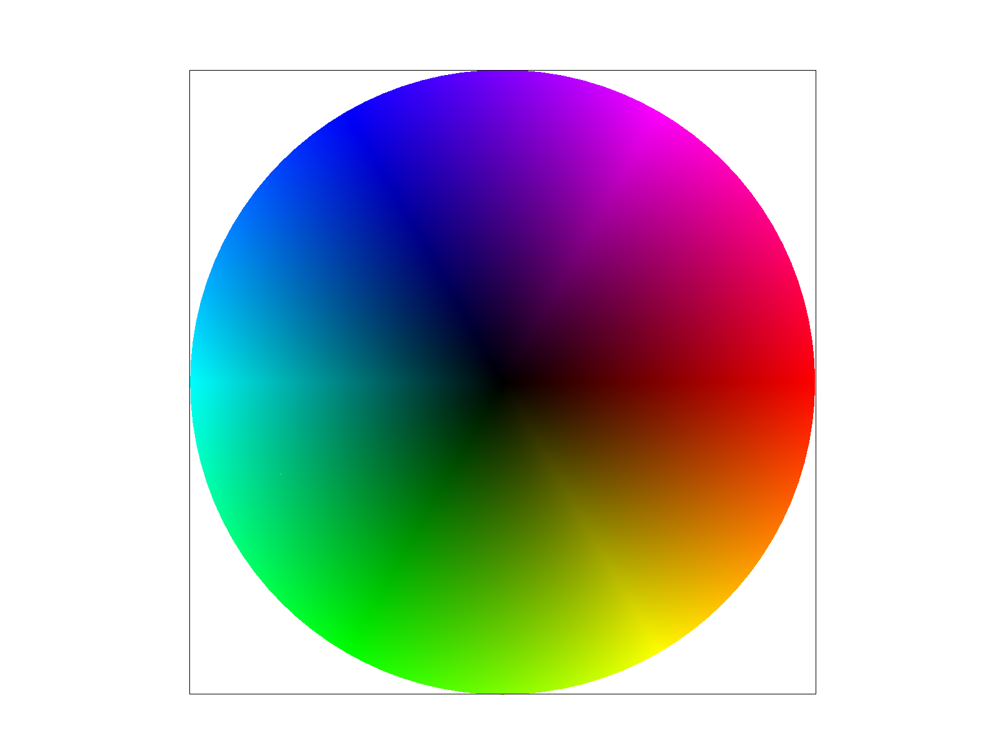
Pixel sampling maps continuous texture coordinates to discrete RGB values to apply images to 3D geometry. I implemented Nearest Neighbor and Bilinear sampling within the rasterize_textured_triangle function to handle this mapping.
For each subpixel sample, I calculated barycentric weights to interpolate vertex UV coordinates into a precise \((u,v)\) sample point. Each subpixel is sampled independently based on the sample_rate parameter, populated into a SampleParams struct, and stored in the sample_buffer. To determine the correct mipmap level, I computed (p_dx_uv and p_dy_uv) from neighboring points \( (x+1, y) \) and \( (x, y+1) \).
|
|
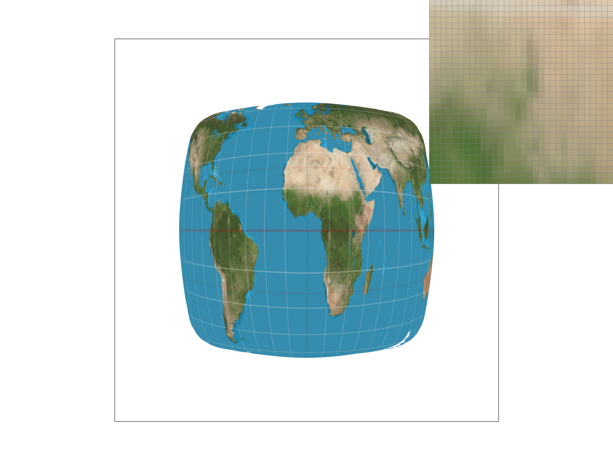 |
|
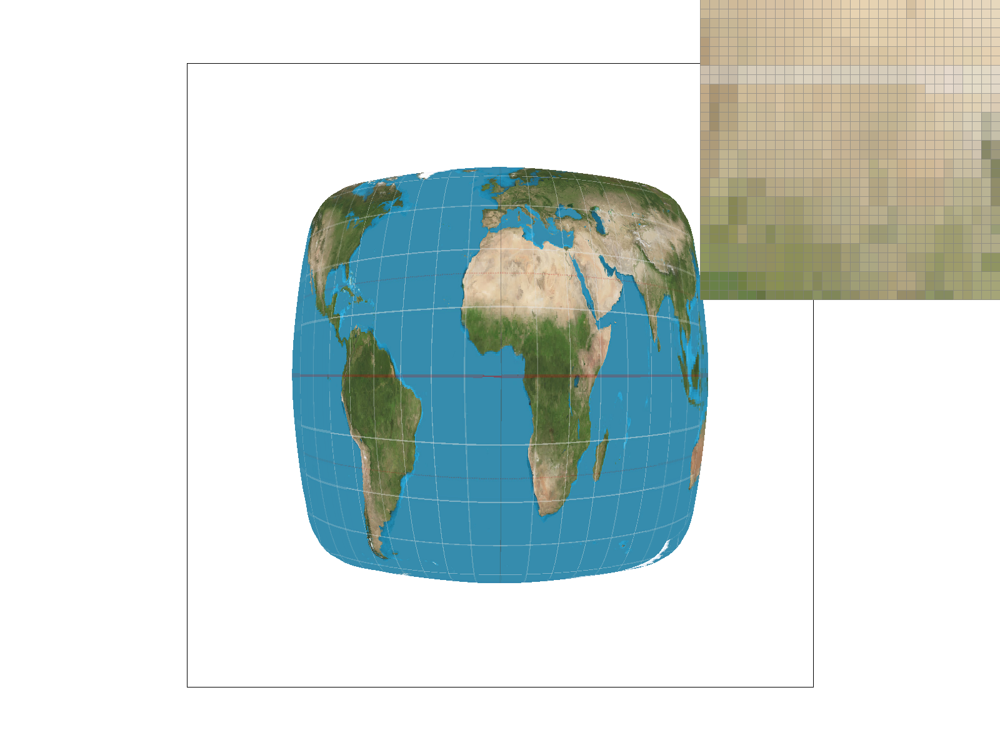 |
|
Sampling methods: Nearest sampling selects the single closest texel, which preserves hard edges but produces noticeable blockiness and aliasing when magnified. Bilinear sampling interpolates between the four surrounding texels using fractional weights (s, t), producing smoother transitions and reducing texture aliasing for continuous images.
Observations: With nearest-neighbor at 1 sample per pixel, aliasing and staircase artifacts are most pronounced because each pixel maps to a single texel. Increasing to 16 samples per pixel reduces geometric aliasing but the texture still appears blocky since samples still use the nearest texel. Bilinear sampling already yields smoother results at 1 sample per pixel, and combined with 16 samples per pixel delivers the best visual quality: supersampling addresses geometric aliasing while bilinear interpolation smooths texture transitions.
Level sampling selects the appropriate mipmap level based on a pixel's texture footprint. Higher-resolution levels are used for small footprints (magnification), while lower-resolution, downsampled levels are used for larger footprints (minification) to prevent aliasing and shimmering.
In rasterize_textured_triangle I compute barycentric-interpolated UVs for each subpixel sample and for neighboring samples at (x+1, y) and (x, y+1). These values are packaged into a SampleParams struct and passed to Texture::get_level, which calculates the maximum footprint vector length in texel space. The mipmap level is then chosen as \(L = \log_2(\mathrm{max\_footprint})\).
L_ZERO: Always samples the full-resolution level 0.L_NEAREST: Samples the nearest integer mip level.L_LINEAR: Linearly blends results from the two adjacent mip levels (trilinear filtering).| Feature | Speed | Memory | Antialiasing Power |
|---|---|---|---|
| Pixel Sampling | P_NEAREST is fastest; P_LINEAR is ~4x slower per sample. |
No additional overhead. | P_LINEAR smooths magnification but not minification. |
| Level Sampling | L_NEAREST is efficient; L_LINEAR is ~2x slower per sample (trilinear). |
Increases texture memory by ~33% for mipmaps. | Effectively reduces minification aliasing and shimmering. |
| Supersampling | Slowest; cost scales linearly with sample_rate. |
Highest; buffer size grows linearly with sample_rate. |
Most powerful; fixes both geometry and texture aliasing. |
|
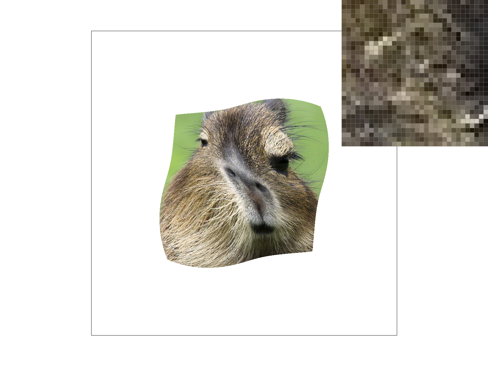 L_ZERO with P_NEAREST |
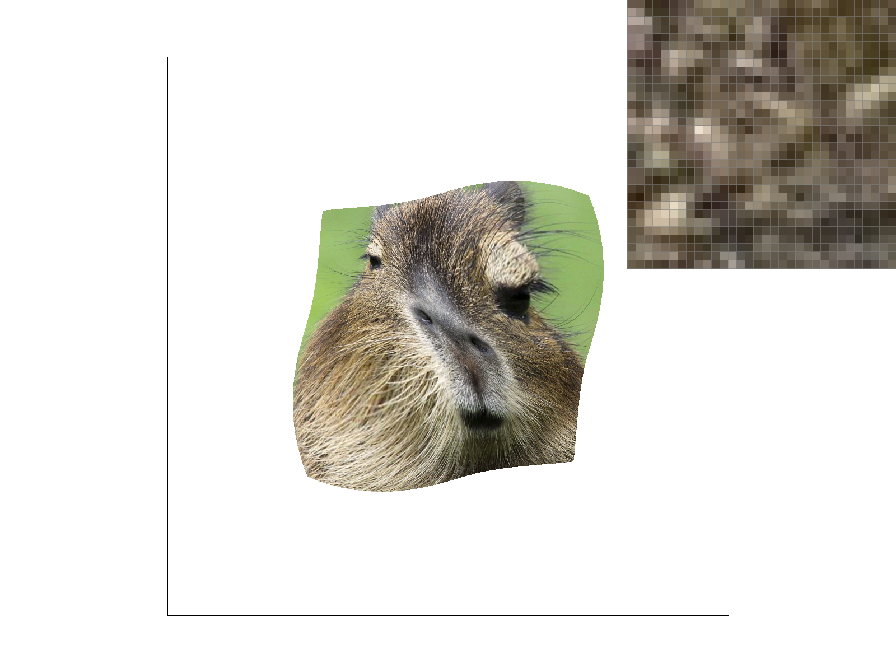 L_ZERO with P_LINEAR |
|
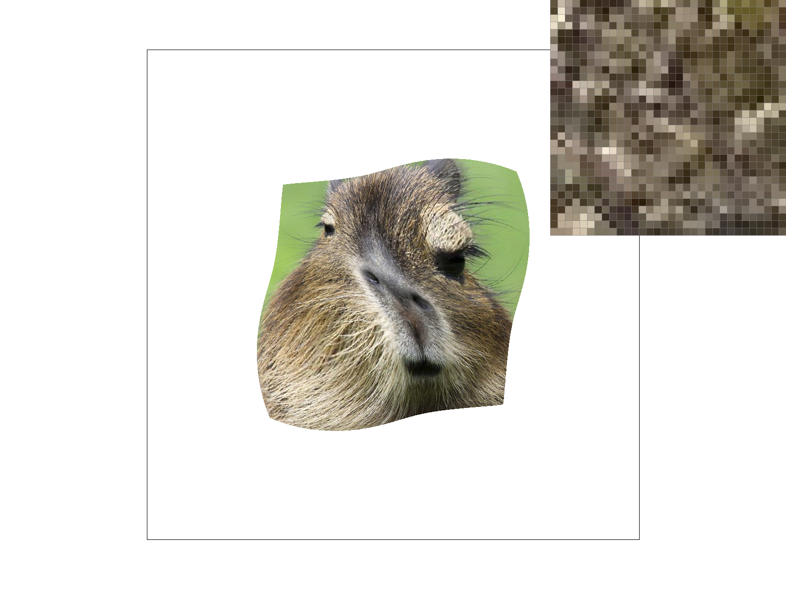 L_NEAREST with P_NEAREST |
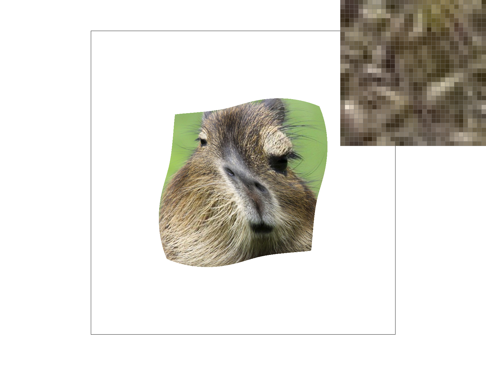 L_NEAREST with P_LINEAR |